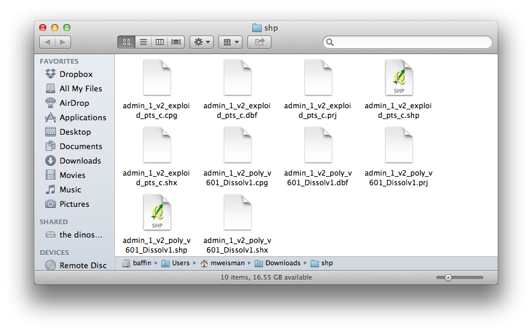
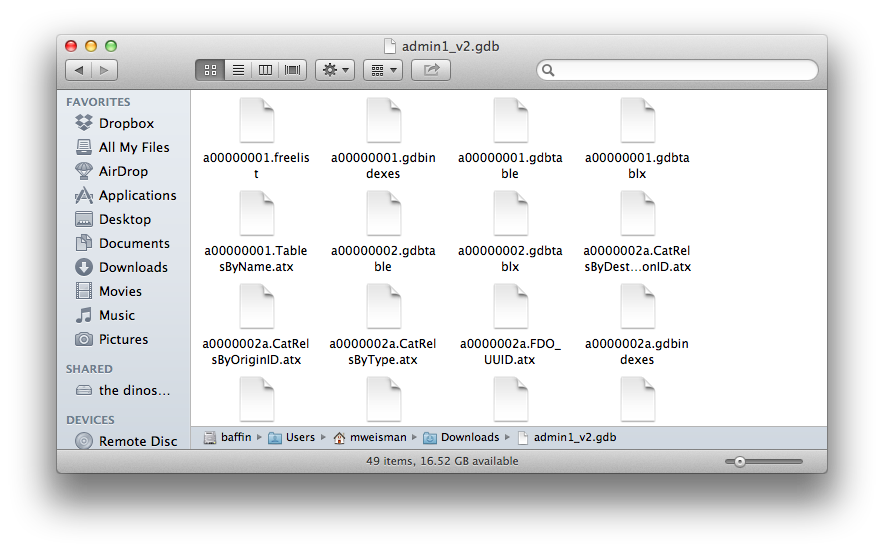
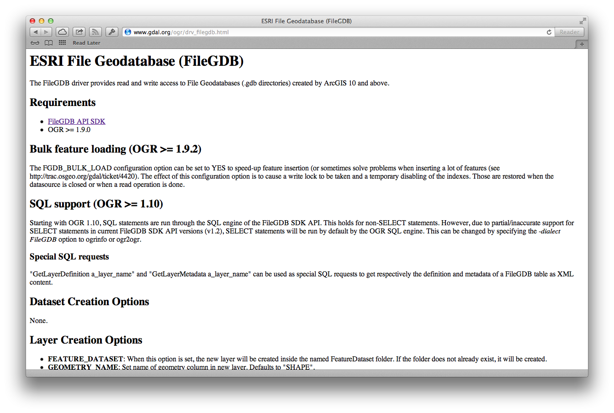
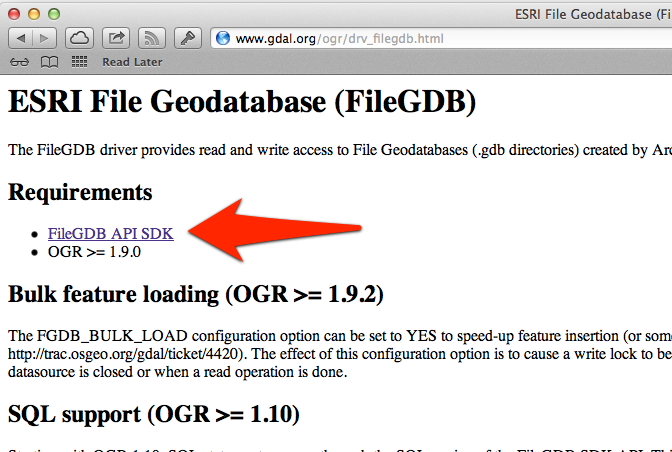
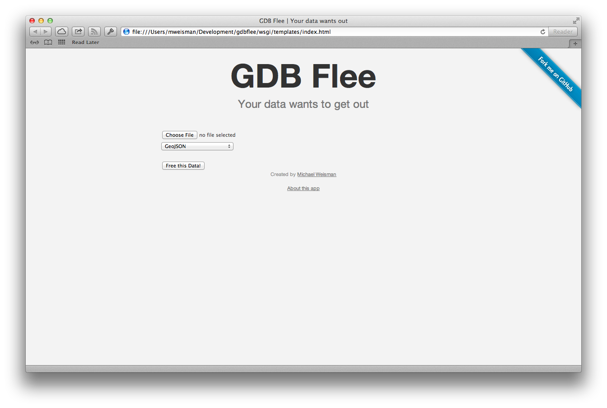
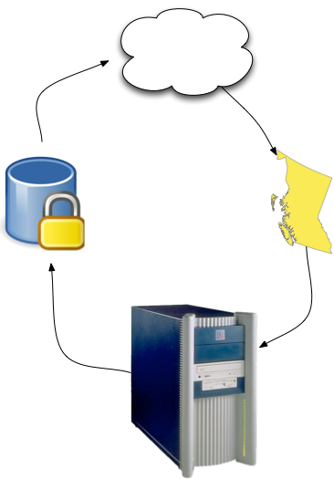
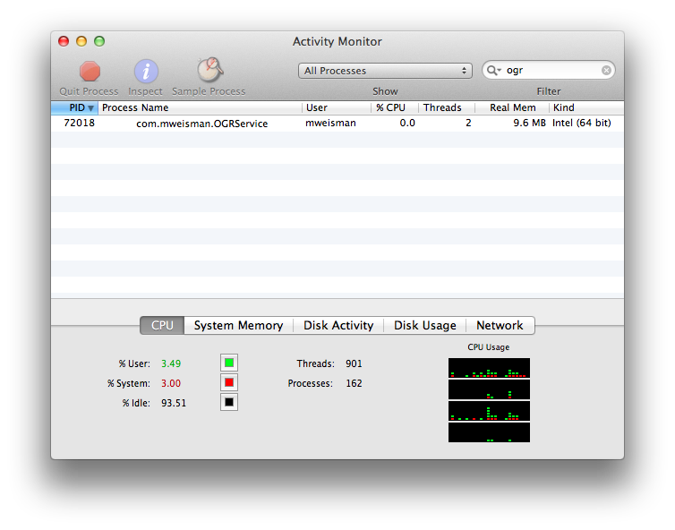

GDB Flee
Your data wants to get out!
Problem
Shapefiles kinda suck Solution
The Future is here! Solution to the "solution"?
Sounds harmless
Take I: Unlocking as a Service (UaaS™)
Opening a File Geodatabase in Python
- OGR SWIG API (osgeo.ogr)
Is "Don't use osgeo.ogr – look at that script, OMFG!" a good enough abstract for a foss4g talk?
— Sean Gillies (@sgillies) January 31, 2013- Fiona
- Write Python Module in 100 lines of C
Python C API
static PyObject* fgdb_convert(PyObject *self, PyObject *args, PyObject *keywds) {
// Fetch inputs from python
char *gdb;
char *gdb_name;
char *out_format;
char *out_path;
static char *kwlist[] = {"gdb", "gdb_name", "out_format", "out_path", NULL};
if (!PyArg_ParseTupleAndKeywords(args, keywds, "ssss", kwlist,
&gdb, &gdb_name, &out_format, &out_path)) {
return NULL;
}
// Do something with OGR
}fgdb.convert(gdb_location, gdb_name, format, out_path)Flask
from flask import Flask
app = Flask(__name__)
@app.route("/")
def hello():
return "Hello World!"
if __name__ == "__main__":
app.run()Problems
Written in a single weekend

Take II: Local Conversion
- Core conversion code nearly identical to Take I
- Native OS X app (Written in Cocoa/Objective-C)
- Complies with App Store rules
- Takes advantage of XPC (more on that in a bit)
XPC?
@Protocol
(Allegedly roughly equivalent to a Java Interface)
@protocol OGR
-(void)driverForFileAtLocation:(NSString *)fileLocation
reply:(void (^)(OGRResponse *ogrr))reply;
-(void)convertFileAtLocation:(NSString *)fileLocation
toFormat:(NSString *)format
toLocation:(NSString *)outLocation
reply:(void (^)(OGRResponse *ogrr))reply;
@end@interface OGRAgent : NSObject <NSXPCListenerDelegate, OGR>Messaging a Remote Object
NSXPCConnection *convertConnection = [[NSXPCConnection alloc] initWithServiceName:@"com.mweisman.OGRService"];
convertConnection.remoteObjectInterface = [NSXPCInterface interfaceWithProtocol:@protocol(OGR)];id <OGR> ogrConversionAgent = [convertConnection remoteObjectProxyWithErrorHandler:^(NSError *err) {
// This block will execute if something goes wrong in the Agent
}];[ogrConversionAgent convertFileAtLocation:gdbFilePath
toFormat:fmt
toLocation:out_path
reply:^(OGRResponse *ogrr){
// This block will execute when com.mweisman.OGRService returns
}];Live Demo
What Next?
- UI looks like it designed by me
- Release in App Store?
- Rip out OGR XPC Agent and make a simple geo translation framework for any OS X 10.8+ (and likely iOS 7+) app?
Further Reading
- Programming with Objective-C
- Cocoa Interprocess Communication with XPC (Requires Apple Dev account)
- K&R
- 21st Century C
- XPC on iOS
- OGR C API